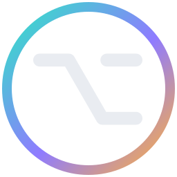
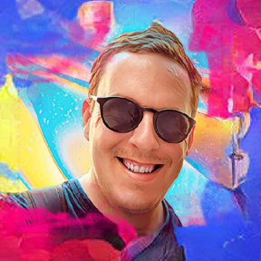
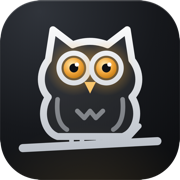
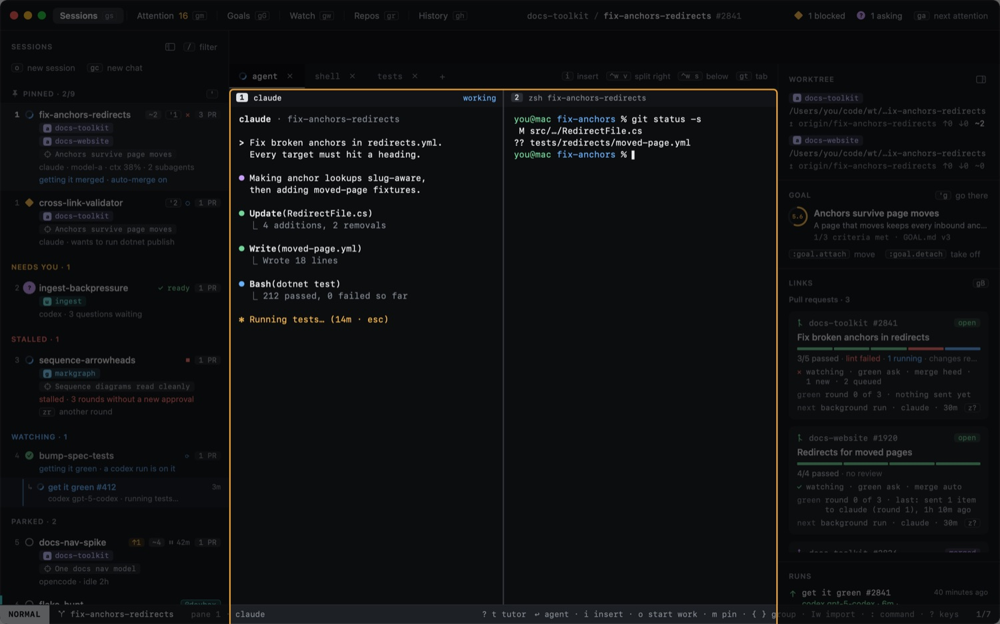
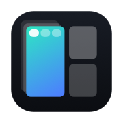
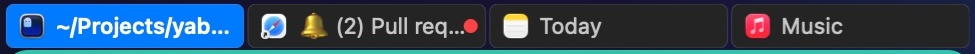
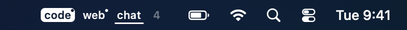
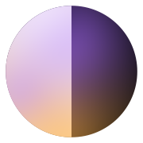

optionull

Built by Martijn Laarman · open source, signed and notarized.
Hi! You've wandered into my little shelf of macOS apps. I maintain every one of them and use them daily, mostly to get more done with fewer clicks. If you're a Linux kid like me, stuck on Apple's gorgeous silicon, I think you'll feel right at home.
optionull on GitHub$ brew tap optionull/tap $ brew install --cask optionull/tap/<app>

heed ADE
An agentic development environment: keyboard-driven, and it doesn't stop at worktree sessions. An autopilot system to shepherd your work to completion, a real memory system of summaries and decisions, and SO much more.
Bring your own agent: Claude, Codex, Cursor, pi, opencode and more.

$ brew install --cask heed-build/tap/heedheed lives in its own org and tap.

yabar
yabai's spaces and window stacks in the menu bar, with i3-style tabs on every stack and a launcher.


$ brew install --cask optionull/tap/yabar
undertone
Generated wallpapers that follow your theme, change on a schedule and hide the notch, with a matching screen saver that drifts the same picture while your Mac is locked.
$ brew install --cask optionull/tap/undertonereel
Record demos of macOS apps and web pages from a script: video with sound, GIFs and captions.
Screen code Output //docs/media/code.mp4 Code code/SpeechClock.swift Go "public mutating func say" Focus lines 9-20 Say "This is how reel keeps one narrated line from talking over the next." Mark "max(now, speechEnd)" 1 Callout "max(now, speechEnd)" "when it's reached, or after the line before"
$ brew install --cask optionull/tap/reelEverything here is open source. github.com/optionull